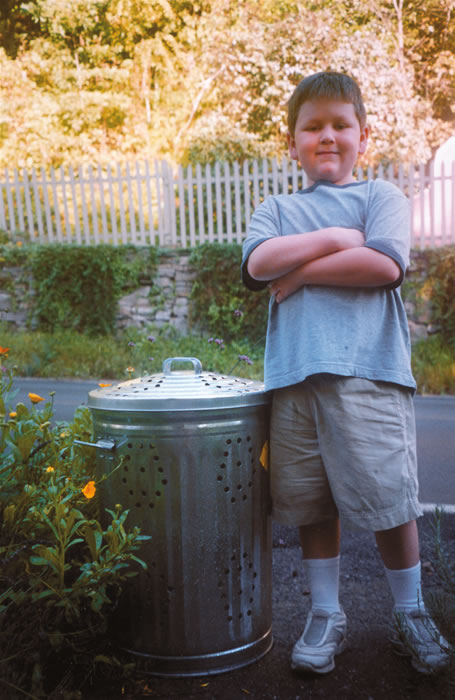
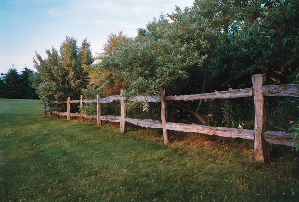

You can make excellent food-quality freezer containers from 1- or 2-quart cardboard milk cartons. Cut off the top of a carton and cut down the sides to form flaps. We have found that they can be reused if the contents are first put into a plastic bag. Remember to leave expansion space for freezing. A closure tab on the cover is optional. Just seal the carton with regular masking tape and a label.
Bob and Mitzie Langevin
Chesterville, Maine
We shred our paper instead of adding to the landfill. I keep two piles, one for private or confidential material and the other for junk mail.
The shredded confidential paper is fed to our worms. They recycle it into the best fertilizer-great for the garden and especially for house plants. The shredded junk mail we use as packing material instead of Styrofoam peanuts or bubble wrap, and the package recipient can use the shredded paper in his/her compost pile, as well.
Neil Jacob
Ambler, Pennsylvania
Our border collie/German shepherd puppies are great, but they seemed to dig holes in the same location no matter what we did. We tried bitter spray deterrents, hot peppers, scolding them, positive reinforcement and other methods, but none of them seemed to work-until we tried this method: Put chicken wire or some sort of steel screen (make sure the holes are not too small) over the favored location; cover the screen with dirt, and wait. Your dogs will try to dig as before, but the wire covering will stop them from getting too far, and the dogs will be deterred because the wire hurts their paws. Before long, they will give up, and you’ve solved your digging problem!
Scott Hollis
Lawrence, Kansas
Ahhh, autumn! The crunch of crisp leaves underfoot; a sip of spiced cider; the heady aroma of fall leaves burning, pumpkin pies baking, cinnamon, allspice and nutmeg.
Here are a couple of recipes to bring the scent of autumn into your home:
Baked Apple Cuplets
Coating/filling:
1/4 cup sugar
1/2 teaspoon cinnamon
6 apples
Batter:
2/3 cup sugar
2/3 cup flour
1/4 teaspoon baking powder
Pinch of salt
1 egg
3 tablespoons butter, melted
1 teaspoon vanilla
Combine the one-quarter cup sugar with the one-half teaspoon cinnamon. Peel and core the apples, and then roll in the mixture. Place in custard cups coated with nonstick spray. Fill the apple cavities with any remaining sugar/cinnamon mixture and set aside. To make the batter, stir together the sugar, flour, baking powder and salt. Lightly beat the egg, mix with the melted butter and vanilla, and then add to the dry ingredients. Stir well. The batter will be thick. Put 2 tablespoons of the batter over each apple. Set the custard cups in a baking dish and bake in a 375-degree oven for 40 to 45 minutes, until the apples are tender. Serves 6.
Cider Mulls
You can use these cider mulls for a festive and aromatic drink. When packaged in a pretty bag, they make a delightful gift.
1 medium orange
1/2 cup brown sugar
2 teaspoons ground allspice
1/2 teaspoon ground nutmeg
2 sticks cinnamon
Whole cloves
Apple cider or juice
Cut the orange in half and scoop out the pulp. Place a crumpled ball of aluminum foil in each orange half to maintain their shape. Place them on a baking sheet and dry in a 200-degree oven for 4 to 5 hours, leaving the door slightly open. Remove the foil and allow the orange halves to dry in the oven for 15 minutes more.
In a small bowl, combine the brown sugar, allspice and nutmeg. Mix well. Pack half of the mixture into each orange section. Decorate the tops with a whole cinnamon stick and cloves, pushing them down into the brown sugar mixture. To serve: put one mull into 3 cups of cider and simmer over low heat for 20 minutes. Serve hot. To give as a gift, wrap each half in plastic wrap and attach directions.
Makes two mulls, or enough for about 6 (1-cup) servings.
Jan Woolley
Hermann, Missouri
Looking for a warm place to raise your yeast-bread dough in winter Simply plug in an electric heating pad on the low setting and place it on the kitchen counter. Put the covered bowl of dough on the pad. As the bowl gradually warms, the dough rises nicely. Glass, pottery or metal bowls all will work.
Barbara Coleman
Henderson, Nebraska
In Waimanalo, Hawaii, birds were eating my seeds as quickly as I could plant them. But each time the sprinkler turned on, the birds were frightened away for a while. I began to think about using a “snap action” intermittent sprinkler that could keep the birds away all the time. I wanted something that wouldn’t need an electric outlet or batteries. I was disappointed to learn that no such product existed, so I jumped on the idea of making one myself with permanent magnets. The sprinkler pops open from the water pressure, and then closes again after the water is released. It runs automatically as long as the water is turned on. It works as an irrigation system in addition to just scaring animals away. See the sprinkler in action at www.spritzwiz.com/index.htm.
Quentin McKenna
Boulder, Colorado
To get rid of pesky gophers, roll together two pieces (one won’t work) of Wrigley’s Juicy Fruit gum and put them down the gopher hole. We have tried several other methods without success, but this works like a charm for us!
Joel and Donna De Blauw
Valley Springs, California
I can’t believe I thought baking soda only was for baking all those years. I could have been using it to clean, scrub and deodorize.
I make my own disinfectant by combining four parts baking soda with one part borax. I store the mixture in a shaker container and then use it as a soft-scrubbing cleaner. It safely scrubs away soils and grease without scratching or putting harmful chemicals into our environment.
Used in the kitchen, it cleans sinks, countertops, microwaves, pots and pans, cutting boards and food containers. Stick a small box of this miracle deodorizer in the refrigerator to eliminate odors. When casserole dishes get burned food stuck on them, just fill the dish with hot water and add 1-tablespoon baking soda and let it soak. Keep garbage disposals fresh by putting in several inches of warm water and a handful of baking soda. Turn on the disposal and let the water run out.
Baking soda works great in bathrooms. It safely removes tough dirt and soap scum on sinks, tubs, showers and toilets, and is a super grout cleaner.
I buy giant-size boxes of it and keep them near at hand for my household cleaning.
Marti French
Jefferson, Colorado
|
 Michelle Higgins Michelle Higgins and her son David (shown above) make compost in their holey barrels. |
 Daniel Boerman Robert Redford Actor and environmentalist Robert Redford talks about art, nature and saving the planet. |
Douglas Kirkland/Corbis |